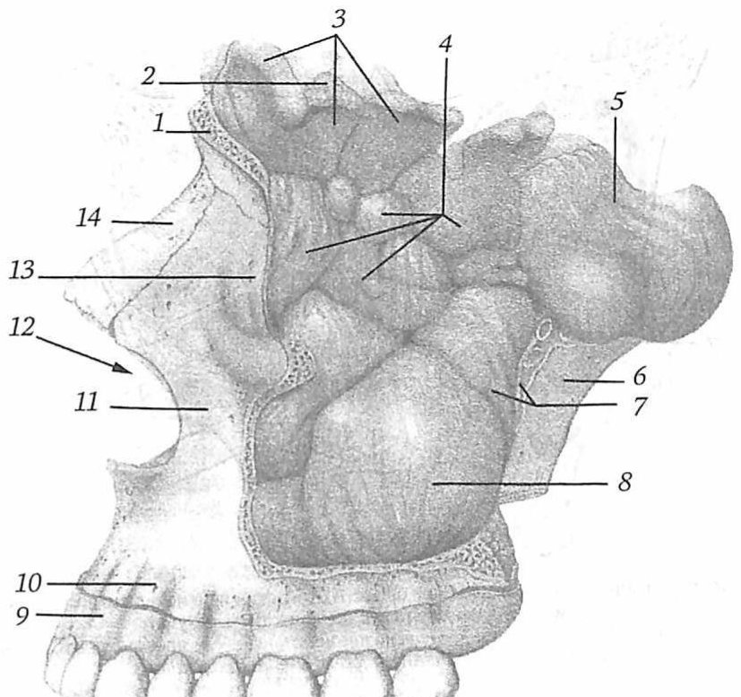

Словарь: О
- О2- сокращение
- Супероксид-анион-радикалГрипп у детей, «Список сокращений», с. 5
- ОАМ сокращение
- общий (клинический) анализ мочиКоклюш у детей, «Список сокращений», с. 4
- ОАР сокращение
- оральный аллергический синдромАллергический ринит, «Список сокращений», с. 5
- ОАЭ сокращение
- отоакустическая эмиссияНейросенсорная тугоухость у детей, «Список сокращений», с. 4; Нейросенсорная тугоухость у взрослых, «Список сокращений», с. 4; Потеря слуха, вызванная шумом, «Список сокращений», с. 4
- ОАЭПИ сокращение
- отоакустическая эмиссия на частоте продукта искаженияПотеря слуха, вызванная шумом, «Список сокращений», с. 4
- Облитерация 2 значения
- 1заращение или закрытие полостного или трубчатого органа вследствие разрастания ткани (чаще соединительной), идущего со стороны его стенокПриобретённая патология слёзоотводящих путей, «Термины и определения»В разборах: Нейросенсорная тугоухость у детей, Отосклероз, Нейросенсорная тугоухость у взрослых, Химический ожог пищевода
- 2патологический процесс, при котором происходит сужение или зарастание полого органа – полости или корневого канала зубаЛечение острой травмы зубов у пациентов детского возраста, «Термины и определения»В разборах: Доброкачественные образования головы и шеи
- Обнажение эндолимфатического мешка
- Хирургическое обнажение и дренирование эндолимфатического мешка (саккотомия). Операция основана на гипотезе о декомпрессии гидропса лабиринта.не из КР: Behrbohm H., Kaschke O., Nawka T. Ear, Nose, and Throat Diseases with Head and Neck Surgery (Thieme), PDF с. 298
- ОБО сокращение
- острая бронхиальная обструкцияРСВ-инфекция у детей, «Список сокращений», с. 4
- Обструктивное апноэ
- отсутствие эффективных дыхательных движений, вызванное наличием препятствия воздушному потоку в верхних дыхательных путях.Апноэ недоношенных новорождённых, «Термины и определения»
- Общая выживаемость 3 значения
- 1от начала лечения до окончания исследования или смерти больного.Рак носоглотки, «Термины и определения», с. 6В разборах: Рак носоглотки
- 2время, прошедшее с момента постановки диагноза НФК до смерти пациента от любых причин или до последнего наблюдения за пациентом.Рак носоглотки у детей, «Термины и определения», с. 5В разборах: Рак носоглотки у детей
- 3от начала лечения до его окончания или смерти пациента. Большие слюнные железы: околоушная слюнная железа, подчелюстная слюнная железа, подъязычная слюнная железа Малые слюнные железы: слюнные железы полости рта, ротоглоткиОпухоли слюнных желёз у детей, «Термины и определения», с. 6В разборах: Опухоли слюнных желёз у детей
- Общеполостная операция
- Санирующая операция на височной кости, цель которой устранить очаг инфекции путём объединения трёх полостей среднего уха: барабанной полости, сосцевидного отростка и слухового прохода. Выполняется при хроническом гнойном среднем отите, в частности при кариозно-грануляционном процессе и холестеатоме.не из КР: Пальчун В. Т., Лучихин Л. А., Магомедов М. М. «Руководство по практической оториноларингологии» (М.: МИА, 2010), с. 282–283
- Овальная щель при фонации
- Форма голосовой щели, которая возникает при парезе голосовых мышц: приводящие мышцы продолжают сближать голосовые отростки и задние концы складок, а дряблые голосовые мышцы в смыкании не участвуют, поэтому между складками остаётся овальная щель. Голос при этом охрипший и слабый.не из КР: Бабияк В. И., Накатис Я. А., Говорун М. И. «Оториноларингология. Руководство», т. 2 (СПб.: Питер, 2009), с. 192
- ОВИН сокращение
- Общая вариабельная иммунная недостаточностьПервичные иммунодефициты с недостаточностью синтеза антител, «Список сокращений», с. 3
- ОГМ сокращение
- отек головного мозгаМенингококковая инфекция у детей, «Список сокращений», с. 3; Вирусные менингиты у детей, «Список сокращений», с. 4
- Огнестрельные ранения гортани
- Самые тяжёлые повреждения гортани, нередко несовместимые с жизнью из-за поражения соседних органов (сонных артерий, спинного мозга, крупных нервов). Поражающими объектами служат осколки, пули и вторичные снаряды (камни, стекло); самые обширные разрушения наносят осколки.не из КР: Бабияк В. И., Накатис Я. А., Говорун М. И. «Оториноларингология. Руководство», т. 2 (СПб.: Питер, 2009), с. 160
- Ограниченный наружный отит
- Очаговое поражение, которое вызвано острой бактериальной инфекцией хрящевого отдела наружного слухового прохода; другое название — фурункул.не из КР: Probst R., Grevers G., Iro H. «Basic Otorhinolaryngology» (Thieme), с. 230 (PDF)
- ОГС сокращение
- острый герпетический стоматитПростой герпес у взрослых, «Список сокращений», с. 4
- ОГСО сокращение
- острый гнойный средний отитОтит средний острый, «Список сокращений», с. 4; Хронический средний отит, «Список сокращений», с. 4
- Одинофагия 2 значения
- 1Боль или неприятные ощущения при прохождении пищи по пищеводу; развивается из-за раздражения рефлюксатом болевых рецепторов пищевода.не из КР: КР «Гастроэзофагеальная рефлюксная болезнь у детей», раздел «Клиническая картина», с. 9В разборах: Гастроэзофагеальная рефлюксная болезнь у детей
- 2болезненность при глотании.Рак пищевода и кардии, «Термины и определения»В разборах: Инородное тело в пищеварительном тракте
- ОДН сокращение
- острая дыхательная недостаточностьКоронавирусная инфекция COVID-19, «Список сокращений», с. 5; Грипп у взрослых, «Список сокращений», с. 4
- Одонтогенный синусит
- Воспаление околоносовой пазухи (чаще верхнечелюстной), связанное с распространением возбудителей из инфицированных зубов. Чаще всего развивается при прикорневых воспалительных процессах и близком расположении поражённого корня зуба ко дну пазухи, в частности при гранулирующем периодонтите или апикальной гранулёме, разрушающих перегородку между дном пазухи и периодонтом.не из КР: Бабияк В. И., Накатис Я. А., Говорун М. И. «Оториноларингология. Руководство», т. 1 (СПб.: Питер, 2009), с. 255–256 (в тексте: «одонтогенный гайморит»)
- ОЕЛ сокращение
- общая ёмкость лёгкихСаркоидоз, «Список сокращений», с. 4
- ОИВЗ сокращение
- острое инфекционно-воспалительное заболеваниеОдонтогенный остеомиелит челюсти, «Список сокращений», с. 3
- Окклюзия
- вид смыкания зубных рядов.Аномалии и деформации зубочелюстной системы и лицевого черепа, «Термины и определения», с. 5
- Окно преддверия
- Овальное отверстие в латеральной стенке преддверия, отделяющей его от барабанной полости; в нём кольцевой связкой закреплено основание стремени, которое перемещается в окне, как поршень в цилиндре.не из КР: Гайворонский И. В. и соавт. «Функциональная анатомия ЛОР-органов» (СПб.: СпецЛит, 2022), с. 71 PDF
- Окно улитки
- Круглое отверстие в латеральной стенке преддверия, расположенное ниже окна преддверия и закрытое тонкой соединительнотканной вторичной барабанной перепонкой.не из КР: Гайворонский И. В. и соавт. «Функциональная анатомия ЛОР-органов» (СПб.: СпецЛит, 2022), с. 71 PDF
- Околоносовые пазухи
- Воздухоносные полости костей черепа вокруг полости носа. Основные околоносовые пазухи: верхнечелюстная, лобная, клиновидная и ячейки решётчатой кости.не из КР: Гайворонский И. В. и соавт. «Функциональная анатомия ЛОР-органов» (СПб.: СпецЛит, 2022), с. 16 PDF
- Околоушная железа
- Слюнная железа, которая прилежит к нижней, а отчасти и к передней стенке хрящевого отдела наружного слухового прохода. Через санториниевы щели воспаление переходит с железы на слуховой проход и в обратном направлении.не из КР: Гайворонский И. В. и соавт. «Функциональная анатомия ЛОР-органов» (СПб.: СпецЛит, 2022), с. 57 PDF
- ОЛ сокращение
- острый ларингитОстрый ларингит, «Список сокращений», с. 4
- ОМ сокращение
- отомикозГрибковый отит, «Список сокращений», с. 4
- ОМД сокращение
- оромандибулярная дистонияДистония, «Список сокращений», с. 4
- ОМК сокращение
- Органно-минеральный комплексХимический ожог пищевода, «Список сокращений», с. 4
- ОНГМ сокращение
- отек-набухание головного мозгаМенингококковая инфекция у взрослых, «Список сокращений», с. 4
- ОНМК сокращение
- острое нарушение мозгового кровообращенияКраниальные мононейропатии у взрослых, «Список сокращений», с. 4
- ОНП 2 значения
- 1ОНП – околоносовые пазухиОстрый синусит, «Список сокращений», с. 4В разборах: Острый синусит
- 2околоносовые пазухиОстрый синусит, «Список сокращений», с. 4; Потеря слуха, вызванная шумом, «Список сокращений», с. 4; Полипозный риносинусит, «Список сокращений», с. 4; Деформация перегородки носа, «Список сокращений», с. 4; Хронический синусит, «Список сокращений», с. 4; Носовое кровотечение, «Список сокращений», с. 4В разборах: Острый синусит, Потеря слуха, вызванная шумом, Полипозный риносинусит, Деформация перегородки носа, Хронический синусит, Носовое кровотечение
- Операция Денкера
- Вариант радикальной операции на верхнечелюстной пазухе (операция Кречмана—Денкера): пазуху вскрывают с резекцией края грушевидного отверстия, разрез продлевают за уздечку верхней губы. Такой доступ позволяет подойти к носоглотке и широко обнажить пазуху.не из КР: Бабияк В. И., Накатис Я. А., Говорун М. И. «Оториноларингология. Руководство», т. 1 (СПб.: Питер, 2009), с. 292
- Опиаты
- алкалоиды опиумного мака (морфин, кодеин, тебаин).Острые отравления опиоидными наркотическими веществами, «Термины и определения»
- ОПН сокращение
- острая почечная недостаточностьМенингококковая инфекция у взрослых, «Список сокращений», с. 4; Грипп у детей, «Список сокращений», с. 4; РСВ-инфекция у детей, «Список сокращений», с. 4
- Опознавательные знаки барабанной перепонки
- Ориентиры на поверхности барабанной перепонки: выступающий короткий отросток молоточка с отходящими от него передней и задней складками, рукоятка молоточка, пупок (умбо) и световой конус.не из КР: Пальчун В. Т., Лучихин Л. А., Магомедов М. М. «Руководство по практической оториноларингологии» (М.: МИА, 2010), с. 66–67
- Опоясывающий лишай
- Вирусное заболевание, проявляющееся сгруппированными мелкими красными высыпаниями на коже ушной раковины, наружного слухового прохода и на барабанной перепонке.не из КР: Нацруководство «Оториноларингология» под ред. В. Т. Пальчуна, гл. 11 «Болезни уха», раздел «Опоясывающий лишай ушной раковины»
- ОПП сокращение
- острое повреждение почекОжоги. Ожоги дыхательных путей, «Список сокращений», с. 5
- ОПТГ сокращение 2 значения
- 1ортопантомографияРасщелина верхней губы и нёба, «Список сокращений», с. 4; Множественные переломы мозгового и лицевого черепа, «Список сокращений», с. 4В разборах: Расщелина верхней губы и нёба, Множественные переломы мозгового и лицевого черепа
- 2ортопантомограммаАномалии и деформации зубочелюстной системы и лицевого черепа, «Список сокращений», с. 4В разборах: Аномалии и деформации зубочелюстной системы и лицевого черепа
- ОПТР сокращение
- ортопантомограммаКисты челюстно-лицевой области и шеи, «Список сокращений», с. 4
- Опыт Федериче
- Сравнение воздушно-хрящевой и костной проводимости звука низкочастотным камертоном: его ножку прижимают к козелку, вдавливая козелок в наружный слуховой проход, и к сосцевидному отростку. Опыт положительный, если звук с козелка кажется громче, и отрицательный, если громче звук с сосцевидного отростка.не из КР: Бабияк В. И., Накатис Я. А., Говорун М. И. «Оториноларингология. Руководство», т. 2 (СПб.: Питер, 2009), с. 392
- Оральный аллергический синдром
- проявления пищевой аллергии, обусловленные перекрестной сенсибилизацией к пыльцевым аллергенам, характеризующиеся зудом и/или легким отеком слизистой оболочки ротовой полости и гортани; при этом могут присутствовать острые симптомы аллергического ринита.Пищевая аллергия, «Термины и определения»
- Орбитальные осложнения
- По классификации Чендлера (Chandler) выделяют пять стадий: 1) воспалительный отёк (пресептальный целлюлит) — воспаление не выходит за орбитальную перегородку; 2) орбитальный целлюлит — воспаление в тканях глазницы без абсцесса; 3) субпериостальный абсцесс — гной под надкостницей стенки глазницы, как правило у бумажной пластинки при этмоидите; 4) абсцесс глазницы — гной внутри орбиты, прорвавший надкостницу; 5) тромбоз (абсцесс) кавернозного синуса.не из КР: Watkinson J. C., Clarke R. W. (eds.) «Scott-Brown's Otorhinolaryngology Head & Neck Surgery», 8th ed. (CRC Press, 2018), т. 1, гл. 101, табл. 101.2, PDF с. 1164; т. 2, гл. 23, PDF с. 310
- Органная или полиорганная недостаточность
- основной критерий перевода в ОРИТ).Менингококковая инфекция у взрослых, «Термины и определения», с. 6
- Органная недостаточность («organ failure»)
- нарушение функции органа, требующее медицинского вмешательства для поддержания гомеостаза.Острый панкреатит, «Термины и определения»
- Органонеспецифические опухоли
- опухоли, не имеющие типичной органной локализации (например, аденокарцинома, плоскоклеточный рак).Доброкачественные образования головы и шеи, «Термины и определения», с. 5
- Органоспецифические опухоли
- опухоли, характерные для определенного органа и его специфических структур.Доброкачественные образования головы и шеи, «Термины и определения», с. 5
- ОРДС сокращение
- острый респираторный дистресс-синдромКоронавирусная инфекция COVID-19, «Список сокращений», с. 5; Грипп у детей, «Список сокращений», с. 4; Ожоги. Ожоги дыхательных путей, «Список сокращений», с. 5; Грипп у взрослых, «Список сокращений», с. 4
- ОРИТ сокращение 2 значения
- 1отделение реанимации и интенсивной терапииМенингококковая инфекция у взрослых, «Список сокращений», с. 4; Коронавирусная инфекция COVID-19, «Список сокращений», с. 5; Острые респираторные вирусные инфекции (ОРВИ) у взрослых, «Список сокращений», с. 4; Грипп у взрослых, «Список сокращений», с. 4; РСВ-инфекция у детей, «Список сокращений», с. 4В разборах: Менингококковая инфекция у взрослых, Коронавирусная инфекция COVID-19, Острые респираторные вирусные инфекции (ОРВИ) у взрослых, Грипп у взрослых, РСВ-инфекция у детей
- 2отделение реанимации/интенсивной терапииВирусные менингиты у детей, «Список сокращений», с. 4В разборах: Вирусные менингиты у детей
- Орофарингоскопия
- Осмотр полости рта и глотки в определённом порядке: преддверие и полость рта, затем ротовая часть глотки (мезофарингоскопия). Шпатель берут в левую руку, правую кладут на темя пациента и просят раскрыть рот.не из КР: Пальчун В. Т., Лучихин Л. А., Магомедов М. М. «Руководство по практической оториноларингологии» (М.: МИА, 2010), с. 45, 46
- Ортогнатическая хирургия
- (от ortho- — лат. прямой, gnatos- — лат. челюсть) — раздел челюстно-лицевой хирургии, занимающийся нормализацией формы, размеров, положения и соотношения челюстей. Ортогнатическая хирургия включает в себя различные виды операций: остеотомия одной челюсти (верхней — по типу Ле-Фор I или нижней челюсти — межкортикальная остеотомия), сегментарная остеотомия верхней челюсти, хирургическое расширение твердого неба, двучелюстная остеотомия, гениопластика, остеотомия скуловых костей, краевая резекция нижней челюсти, а также хирургические приемы, направленные на профилактику нарушения функции носового дыхания.Аномалии и деформации зубочелюстной системы и лицевого черепа, «Термины и определения», с. 5
- Орфанное заболевание
- редкие заболевания с распространенностью не более 10 на 100 000 населения.Первичная хроническая надпочечниковая недостаточность, «Термины и определения»
- ОС сокращение
- острый синуситОстрый синусит, «Список сокращений», с. 4
- ОСВ сокращение
- околоводопроводное серое веществоМигрень у детей, «Список сокращений», с. 3
- ОСЖ сокращение
- околоушная слюнная железаОпухоли слюнных желёз у детей, «Список сокращений», с. 4
- ОСЛТ сокращение
- Острый стенозирующий ларинготрахеитГрипп у детей, «Список сокращений», с. 5; РСВ-инфекция у детей, «Список сокращений», с. 4
- Основание стремени
- Часть стремени, закрывающая окно преддверия; покрыто хрящом и посредством кольцевидной связки соединено с хрящевым краем овального окна. Связка закрывает щель между основанием и краем окна и обеспечивает подвижность стремени.не из КР: Гайворонский И. В. и соавт. «Функциональная анатомия ЛОР-органов» (СПб.: СпецЛит, 2022), с. 66 PDF
- ОСНТ сокращение
- острая сенсоневральная тугоухостьНейросенсорная тугоухость у взрослых, «Список сокращений», с. 4
- ОСО сокращение
- острый средний отитМастоидит, «Список сокращений», с. 4; Отит средний острый, «Список сокращений», с. 4; Хронический средний отит, «Список сокращений», с. 4; Хронический синусит, «Список сокращений», с. 4
- Оссикулопластика
- Реконструкция цепи слуховых косточек; вместе с мирингопластикой (реконструкцией барабанной перепонки) составляет тимпанопластику — микрохирургическое вмешательство, цель которого изолировать барабанную полость от наружного слухового прохода и в значительной мере восстановить физиологический механизм звукопроведения. Иногда достаточно одной из двух операций.не из КР: Probst R., Grevers G., Iro H. «Basic Otorhinolaryngology: A Step-by-Step Learning Guide» (Thieme), с. 255 PDF
- ОССН сокращение 2 значения
- 1острая сердечно-сосудистая недостаточностьМенингококковая инфекция у детей, «Список сокращений», с. 3В разборах: Менингококковая инфекция у детей
- 2острая сердечная и сосудистая недостаточностьГрипп у взрослых, «Список сокращений», с. 5В разборах: Грипп у взрослых
- Остеома
- доброкачественная, медленно растущая (средняя скорость 0,44-6,0 мм в год) опухоль, развивающаяся из костной ткани. В литературе не описано ни одного случая малигнизации остеомы.Доброкачественные остеогенные и хондрогенные опухоли носа и околоносовых пазух, раздел 1.1
- Остеомиелит 2 значения
- 1воспалительное состояние костной ткани различной природы, которое начинается с медуллярной полости, быстро распространяется по системе гаверсовых каналов, вовлекая в воспаление надкостницу и прилегающие мягкие ткани.Воспалительные заболевания челюстей у детей, «Термины и определения», с. 4В разборах: Одонтогенный остеомиелит челюсти, Рак ротоглотки, Воспалительные заболевания челюстей у детей
- 2инфекционное воспаление всех составляющих частей костной ткани: кости, надкостницы и костного мозгаСерповидно-клеточные нарушения, «Термины и определения»В разборах: Наружный отит у детей, Рак гортани, Рак носоглотки, Множественные переломы мозгового и лицевого черепа
- Остеомиелит Гарре
- Хронический (пролиферативный, оссифицирующий) периостит нижней челюсти, преимущественно у подростков: периостальная реакция на периапикальное воспаление даёт утолщение и припухлость нижнего края нижней челюсти по типу «луковой шелухи». Гистологически — клеточная грубоволокнистая кость в виде параллельных слоёв; через 6–12 месяцев после устранения источника инфекции кость перестраивается.не из КР: Watkinson J. C., Clarke R. W. (eds). Scott-Brown’s Otorhinolaryngology, Head and Neck Surgery, 8th ed., vol. 3, p. 451 PDF
- Остеонекроз (ОН)
- поражение различных отделов кости полиэтиологической природы, возникающее в ответ на прогрессирующее нарушение в ней микроциркуляции и приводящее к гибели костного мозга и трабекулярной кости. По мнению сотрудников ФГБНУ НИИР им. В.А. Насоновой, по этиологии, патогенезу или данным магнитно-резонансной томографии (МРТ) ОН условно разделяют на 4 категории:Комбинированные врожденные и приобретенные дефекты и деформации челюстно-лицевой локализации, «Термины и определения»
- Остеопатия
- область клинической медицины, включающая оказание медицинской помощи пациентам с соматическими дисфункциями на этапах профилактики, диагностики, лечения и реабилитации, основанная на анатомо-функциональном единстве тела и использующая мануальные методы, восстанавливающие способности организма к самокоррекции. Остеопатия рассматривает организм человека как целостную систему, представляющую собой нечто более сложное, чем простая сумма его частей (Мохов Д.Е. и соавт., 2020).Соматическая дисфункция, «Термины и определения»
- Остеопороз
- метаболическое заболевание скелета, характеризующееся снижением костной массы, нарушением микроархитектоники костной ткани и, как следствие, переломами при минимальной травме [5, 6].Остеопороз, раздел 1.1
- Остеорадионекроз
- Обнажение и некроз ранее облучённой кости, не заживающие в течение 3 месяцев (определение для височной кости). Облучение угнетает митозы и репарацию тканей, вызывает васкулит с облитерацией сосудов и аваскулярный некроз; ткань становится гипоксичной, малоклеточной и малососудистой. Макроскопически — дефект кожи и мягких тканей с обнажённой костью, секвестрами и вторичной инфекцией; нижняя челюсть поражается значительно чаще пирамиды височной кости.не из КР: Watkinson J. C., Clarke R. W. (eds). Scott-Brown’s Otorhinolaryngology, Head and Neck Surgery, 8th ed., vol. 2, p. 1010 PDF–1011
- Остеосаркома (ОС)
- первично злокачественная опухоль костей, которая развивается из примитивных мезенхимальных стволовых клеток, продуцирующих патологический остеоид [1]. ОС является самой частой первичной злокачественной опухолью костей среди пациентов в группе от 10 до 18 лет [2].Злокачественные новообразования костей и суставных хрящей: остеосаркома, саркома Юинга, раздел 1.1
- Остеосинтез 2 значения
- 1Соединение отломков костей; при переломе или остеотомии выполняется во время операции.не из КР: КР «Перелом верхней челюсти», раздел «Термины и определения», с. 6; КР «Множественные переломы мозгового и лицевого отделов черепа», раздел «Термины и определения», с. 6В разборах: Перелом верхней челюсти
- 2соединение фрагментов костей при их переломе или остеотомии во время операции.Множественные переломы мозгового и лицевого отделов черепа, «Термины и определения»В разборах: Множественные переломы мозгового и лицевого черепа
- Остеосинтез внеочаговый
- остеосинтез, при котором фиксирующий элемент расположен вне щели перелома.Множественные переломы мозгового и лицевого черепа, «Термины и определения», с. 6
- Остеосинтез закрытый
- остеосинтез без рассечения мягких тканей в области перелома.Множественные переломы мозгового и лицевого черепа, «Термины и определения», с. 6
- Остеосинтез открытый
- остеосинтез с рассечением мягких тканей в области перелома.Множественные переломы мозгового и лицевого черепа, «Термины и определения», с. 6
- Остеосинтез очаговый
- остеосинтез, при котором фиксирующий элемент пересекает щель перелома.Множественные переломы мозгового и лицевого черепа, «Термины и определения», с. 6
- Остеосклеротические очаги
- Участки остеосклероза: плотность кости в них превышает плотность нормальной костной ткани; на КТ чередуются с очагами деструкции и секвестрами.не из КР: КР «Воспалительные заболевания челюстей», раздел 2, с. 18
- Остеотомия
- хирургическая операция, включающая пересечение кости с целью последующего изменения ее размеров и формы.Приобретенные деформации нижних конечностей (кроме стопы), «Термины и определения»
- Остиомеатальный комплекс
- Область в начальном отделе среднего носового хода: медиально её ограничивает средняя носовая раковина, латерально крючковидный отросток. Сюда, в полулунную щель и решётчатую воронку, открываются клетки валика носа, соустье верхнечелюстной пазухи и соустье лобной пазухи.не из КР: Пальчун В. Т., Лучихин Л. А., Магомедов М. М. «Руководство по практической оториноларингологии» (М.: МИА, 2010), с. 27
- Остиофолликулит
- Гнойное воспаление волосяного фолликула: небольшая конусовидная пустула с выстоящим из неё волосом, окаймлённая по периферии узким ободком гиперемии. При распространении инфекции вглубь фолликула возникает фолликулит с инфильтратом вокруг волоса, из которого могут развиться сикоз, фурункул или карбункул.не из КР: Бабияк В. И., Накатис Я. А., Говорун М. И. «Оториноларингология. Руководство», т. 1 (СПб.: Питер, 2009), с. 125 (в тексте: «остеофолликулит»)
- ОСТЛ сокращение
- острый стенозирующий ларинготрахеитГрипп у взрослых, «Список сокращений», с. 5
- Острое повреждение почек (ОПП)
- полиэтиологический синдром, характеризующийся острым снижением гомеостатических функций почек, приводящий к накоплению продуктов азотистого обмена, нарушению водно-электролитного и кислотно-основного баланса.Острое повреждение почек у новорождённых детей, раздел 1.1
- Острые лимфобластные лейкозы
- гетерогенная группа клональных заболеваний системы крови, возникающих вследствие мутации в Т- или В-клетках-предшественницах.Острые лимфобластные лейкозы, «Термины и определения»
- Острый бронхит
- остро или подостро возникшее воспаление нижних отделов дыхательных путей преимущественно вирусной этиологии, ведущим клиническим симптомом которого является продуктивный кашель (чаще продуктивный), продолжающийся не более 2 недель (возможно до 4-х недель) в сочетании с характерными признаками инфекции нижних отделов респираторного тракта (хрипы, дискомфорт в грудной клетке, одышка) без возможности их альтернативного объяснения в рамках острого или хронического процесса [1-6].Острый бронхит, «Термины и определения»
- Острый коронарный синдром (ОКС)
- термин, обозначающий любую группу клинических признаков или симптомов, позволяющих подозревать острый инфаркт миокарда или нестабильную стенокардию.Острый коронарный синдром без подъема сегмента ST электрокардиограммы, «Термины и определения»
- Острый ларингит (ОЛ)
- острое воспаление слизистой оболочки гортани длительностью до 3 недель [1, 2].Острый ларингит, «Термины и определения», с. 5
- Острый лимфобластный лейкоз (ОЛЛ)
- лимфоидная направленность бластных клеток.Миелодиспластический синдром. Миелодиспластические/ миелопролиферативные новообразования , «Термины и определения»
- Острый обструктивный ларингит (круп)
- воспаление гортани и тканей подскладочного пространства с сужением просвета гортани. Ранее для данного состояния также использовались термины «стенозирующий ларинготрахеит», «ложный круп».Острый обструктивный ларингит [круп], эпиглоттит, постинтубационный отек гортани , раздел 1.1
- Острый одонтогенный остеомиелит
- Острый одонтогенный остеомиелит – это острый одонтогенный инфекционно-воспалительный процесс, при котором зона поражения в челюсти распространяется за пределы зубо-альвеолярного сегмента, явившегося местом локализации входных ворот для возбудителя заболевания, на пародонт соседних зубов или тело челюсти.Одонтогенный остеомиелит челюсти, «Термины и определения», с. 4
- Острый одонтогенный периостит
- Острый одонтогенный периостит – это острое одонтогенное серозно-гнойное или гнойное воспаление периоста (надкостницы), при котором зона первичного инфекционно-воспалительного процесса в челюсти ограничена пределами одного зубо-альвеолярного сегмента, явившегося местом локализации входных ворот для возбудителей заболевания, с образованием поднадкостничного абсцесса.Одонтогенный остеомиелит челюсти, «Термины и определения», с. 4
- Острый поствирусный синусит
- форма острого синусита, которая часто является исходом острого вирусного синусита (сохранение симптомов более 10 дней). В еѐ основе лежат цитопатические эффекты, возникающие в структуре слизистой оболочки полости носа и околоносовых пазух у больных перенесших острую респираторновирусную инфекцию. Больные с данной формой ОС не имеют клинико-анамнестических признаков острого бактериального синусита, для данной формы ОС в подавляющем большинстве случаев характерно более легкое течение и излечение пациента без назначения антибактериальной терапии.Острый синусит, «Термины и определения», с. 5
- Острый синусит (ОС)
- острое воспаление слизистой оболочки полости носа и околоносовых пазух (ОНП) длительностью <12 недель.Острый синусит, «Термины и определения», с. 5
- Острый средний отит
- воспалительный процесс, охватывающий все три отдела среднего уха: барабанную полость, клетки сосцевидного отростка, слуховую трубу, проявляющийся одним или несколькими характерными симптомами (боль в ухе, повышение температуры, снижение слуха, а в ряде случаев и гноетечением из уха). В патологический процесс вовлекается только слизистая оболочка указанных полостей.Отит средний острый, «Термины и определения», с. 5
- Острый тонзиллофарингит (ОТФ)
- острое инфекционное воспаление слизистой оболочки и лимфатических структур ротоглотки (небные миндалины, лимфоидные фолликулы задней стенки глотки).Острый тонзиллит и фарингит, «Термины и определения», с. 5
- ОТ ПЦР сокращение
- метод полимеразной цепной реакции с обратной транскрипциейРСВ-инфекция у детей, «Список сокращений», с. 4
- ОТ-ПЦР сокращение
- полимеразная цепная реакция с обратной транскрипциейОРВИ у детей, «Список сокращений», с. 4; Грипп у взрослых, «Список сокращений», с. 5
- Ответ на терапию
- достижение целевых значений показателей в результате назначения лечения.Первичный билиарный холангит, «Термины и определения»
- Отёк гортани
- Серозное пропитывание рыхлого подслизистого слоя. Бывает воспалительным (токсигенная инфекция) и невоспалительным (аллергия, обменные нарушения, сердечная и почечная недостаточность). Развивается на язычной поверхности надгортанника, в черпалонадгортанных складках, в области черпаловидных хрящей и в подскладочном пространстве, но не на голосовых складках.не из КР: Бабияк В. И., Накатис Я. А., Говорун М. И. «Оториноларингология. Руководство», т. 2 (СПб.: Питер, 2009), с. 77–79
- Отек-набухание головного мозга
- патологический воспалительный процесс, проявляющийся избыточным накоплением жидкости в клетках головного или спинного мозга (в первую очередь глии) и межклеточном пространстве, увеличением объёма мозга и внутричерепной гипертензией, - причина дислокационных смещений головного мозга, грубых гемодинамических и дыхательных расстройств.Менингококковая инфекция у взрослых, «Термины и определения», с. 7
- Отёчный ларингит
- Форма ларингита: воспалительный отёк гортани с гиперемией слизистой оболочки, лейкоцитарной и лимфоцитарной инфильтрацией периваскулярных пространств и пропитыванием подслизистого слоя серозным транссудатом. У взрослых чаще возникает в преддверии гортани, у детей в подскладочном пространстве.не из КР: Бабияк В. И., Накатис Я. А., Говорун М. И. «Оториноларингология. Руководство», т. 2 (СПб.: Питер, 2009), с. 77, 78
- Открытая гнусавость
- Носовой оттенок речи (так определено в КР). При недоразвитии мягкого нёба носоглотка остаётся открытой при произнесении носовых согласных и при глотании, поэтому возникает открытая гнусавость и жидкая пища попадает в носоглотку.не из КР: КР «Одно- и двусторонняя расщелина верхней губы, альвеолярного отростка, твердого и мягкого нёба», раздел 1.5, с. 9; Бабияк В. И., Накатис Я. А., Говорун М. И. «Оториноларингология. Руководство», т. 1 (СПб.: Питер, 2009), с. 663
- Открытая рана, затрагивающая гортань
- повреждение структур гортани, которое сопровождается нарушением целостности кожных покровов и/или слизистой оболочки на всю глубину, а часто и повреждение глубже расположенных тканей и органов.Травма гортани, «Термины и определения»
- Открытый перелом
- нарушение целостности кости, которое сопровождается повреждением кожных покровов в зоне перелома и повреждением окружающих мягких тканей.Переломы ключицы и лопатки, «Термины и определения»
- Открытый перелом нижней челюсти
- вид перелома, при котором возникает сообщение щели перелома с внешней средой через рану кожи, рану (разрыв) слизистой оболочки полости рта, либо через периодонтальную щель зуба.Множественные переломы мозгового и лицевого черепа, «Термины и определения», с. 6
- Отоакустическая эмиссия (ОАЭ) 3 значения
- 1слабые звуковые колебания, генерируемые наружными волосковыми клетками органа Корти, которые могут быть зарегистрированы специальном зондом в наружном слуховом проходе. ОАЭ не регистрируется, если пороги слышимости превышают 25-30 дБ нПС в частотном диапазоне от 1 кГц до 4 кГц, охватывающем большую часть зоны речевых частот.Нейросенсорная тугоухость у взрослых, «Термины и определения», с. 5В разборах: Болезнь Меньера, Нейросенсорная тугоухость у взрослых
- 2низкоинтенсивные звуковые колебания, генерируемые наружными волосковыми клетками органа Корти, которые могут быть зарегистрированы акустическим зондом в наружном слуховом проходе. ОАЭ, вызываемая на звуковую стимуляцию, не регистрируется, если пороги слышимости превышают 25-30 дБ нПС (или 40-50дБ нПС для теста ОАЭПИ со стимулом 70/70дБ) в частотном диапазоне от 1 кГц до 4-5 кГц или до 8-10 кГц (в зависимости от типа ОАЭ).Нейросенсорная тугоухость у детей, «Термины и определения», с. 5В разборах: Нейросенсорная тугоухость у детей, Врождённая цитомегаловирусная инфекция, Мастоидит
- 3слабые звуковые колебания, генерируемые наружными волосковыми клетками органа Корти, которые могут быть зарегистрированы специальном зондом в наружном слуховом проходе.Потеря слуха, вызванная шумом, «Термины и определения», с. 5В разборах: Потеря слуха, вызванная шумом
- Отоакустическая эмиссия на частоте продукта искажения
- Вид вызванной отоакустической эмиссии, при котором стимулом служат две одновременно подаваемые тональные посылки с разными частотами f1 и f2. В норме регистрируется в 100% случаев.не из КР: Пальчун В. Т., Лучихин Л. А., Магомедов М. М. «Руководство по практической оториноларингологии» (М.: МИА, 2010), с. 100
- Отоантрит
- воспаление слизистой оболочки и костной ткани пещеры сосцевидного отростка, которое развивается как осложнение острого среднего отита у новорожденных и у детей грудного возраста.Мастоидит, «Термины и определения», с. 5
- Отогематома
- Скопление крови между хрящом и надхрящницей ушной раковины в результате механического воздействия; редко возникает спонтанно, например при лейкозе или гемофилии. Содержимое состоит из крови и лимфы с преобладанием лимфы, поэтому жидкость светло-жёлтая и не свёртывается. Плотная спаянность кожи с надхрящницей способствует стойким гематомам; на задней поверхности раковины они не образуются из-за рыхлой подкожной клетчатки.не из КР: КР «Травма уха», раздел «Термины и определения», раздел 1.1; Бабияк В. И., Накатис Я. А., Говорун М. И. «Оториноларингология. Руководство», т. 2 (СПб.: Питер, 2009), с. 268, 490
- Отогенные внутричерепные осложнения
- Осложнения, возникающие при проникновении инфекции в полость черепа при гнойном воспалении среднего и внутреннего уха. Вызывают их острый гнойный средний отит, мастоидит, хронический гнойный мезо- и эпитимпанит.не из КР: Нацруководство «Оториноларингология» под ред. В. Т. Пальчуна, гл. 11 «Болезни уха», раздел «Отогенные внутричерепные осложнения и отогенный сепсис»
- Отоликворея
- истечение ликвора через наружный слуховой проход через дефект твёрдой мозговой оболочки в средней черепной ямке.Перелом верхней челюсти, «Термины и определения», с. 6
- Отолитовый аппарат
- Пятна (macula utriculi и macula sacculi) в маточке и мешочке преддверия лабиринта: утолщённый эпителий с волосковыми и опорными клетками. Волоски погружены в желатиноподобную отолитовую мембрану с кристаллами углекислого кальция, плотность которых выше, чем у эндолимфы; при наклонах головы и линейном ускорении мембрана смещается относительно пятна, и давление отолитов на волосковые клетки меняется.не из КР: Гайворонский И. В. и соавт. «Функциональная анатомия ЛОР-органов» (СПб.: СпецЛит, 2022), с. 76 PDF
- Отолитовый криз Тумаркина
- Внезапное падение пациента на землю без потери сознания (в англоязычной литературе drop attack). Встречается относительно редко и возникает на поздних стадиях болезни Меньера.не из КР: Probst R., Grevers G., Iro H. Basic Otorhinolaryngology (Thieme), с. 283
- Отомикоз (ОМ)
- грибковое заболевание, обусловленное развитием на коже ушной раковины, стенках наружного слухового прохода, барабанной перепонке, в барабанной полости и послеоперационной полости среднего уха различного рода плесневых и дрожжеподобных грибов [6, 18].Грибковый отит, «Термины и определения», с. 5
- Отомикроскопия
- осмотр наружного слухового прохода и барабанной перепонки под микроскопом. Используется для детального осмотра барабанной перепонки, а при наличии перфорации – структур барабанной полости.Отосклероз, «Термины и определения», с. 4; Хронический средний отит, «Термины и определения», с. 5
- Оторея
- Выделения из уха. При осмотре оценивают их цвет, запах (гнилостный при холестеатоме), консистенцию и количество.не из КР: Пальчун В. Т., Лучихин Л. А., Магомедов М. М. «Руководство по практической оториноларингологии» (М.: МИА, 2010), с. 69
- Отосклероз
- специфическое заболевание, представляющее собой первичное метаболическое поражение костной капсулы ушного лабиринта, выражающееся особой формой остеодистрофии с преимущественно двусторонним очаговым поражением энхондрального слоя капсулы. При этом вначале наблюдается деструкция костной ткани с образованием мягких отоспонгиозных кровенаполненных очагов, а затем – образование очень плотной склеротической кости вследствие отложения в этих очагах солей кальция. Эти фазы размягчения и склерозирования кости имеют волнообразное течение.Отосклероз , раздел 1.1
- Отоскопия
- Осмотр наружного слухового прохода и барабанной перепонки через ушную воронку, отоскоп, эндоскоп или микроскоп. Пневматическая воронка Зигле даёт увеличение и, сгущая и разрежая воздух в слуховом проходе, позволяет оценить подвижность барабанной перепонки.не из КР: Пальчун В. Т., Лучихин Л. А., Магомедов М. М. «Руководство по практической оториноларингологии» (М.: МИА, 2010), с. 13
- Отоспонгиоз
- Термин, который предложил Ф. Зибенманн для отосклеротического очага: кость в нём порозная (губчатая). Используется как синоним отосклероза и как название активной, незрелой стадии процесса.не из КР: Бабияк В. И., Накатис Я. А., Говорун М. И. «Оториноларингология. Руководство», т. 2 (СПб.: Питер, 2009), с. 650; Оториноларингология: национальное руководство / под ред. В. Т. Пальчуна, гл. 11 «Болезни уха» (раздел «Отосклероз», синонимы)
- Ототоксичность
- Способность вещества повреждать структуры внутреннего уха. Аминогликозиды повреждают волосковые клетки улитки: стрептомицин и гентамицин преимущественно поражают вестибулярную систему, амикацин улитку. Решающее значение имеет концентрация вещества в перилимфе и эндолимфе, которая лишь косвенно связана с его концентрацией в сыворотке крови; особенно важна функция почек.не из КР: Probst R., Grevers G., Iro H. Basic Otorhinolaryngology (Thieme), с. 263
- Отоэндоскопия
- Осмотр среднего уха эндоскопами. Позволяет увидеть участки, остававшиеся слепыми зонами для операционного микроскопа (тимпанальный и эпитимпанальный синусы, протимпанум); с начала 1980-х годов используется для диагностики, особенно для выявления остаточной холестеатомы после операций с сохранением задней стенки слухового прохода.не из КР: Watkinson J. C., Clarke R. W. (eds). Scott-Brown’s Otorhinolaryngology, Head and Neck Surgery, 8th ed., vol. 2, p. 1090 (PDF)
- Отравление
- заболевание, развивающееся вследствие внешнего (экзогенного) воздействия на организм человека или животного химических соединений в количествах, вызывающих нарушения физиологических функций и создающих опасность для жизни.Отравление сердечными гликозидами и препаратами аналогичного действия, «Термины и определения»
- Отрыв гортани от трахеи
- Полное разъединение гортани и трахеи при ранении между перстневидным хрящом и трахеей: трахея смещается в средостение, из повреждённой щитовидной железы возникает обильное кровотечение.не из КР: Бабияк В. И., Накатис Я. А., Говорун М. И. «Оториноларингология. Руководство», т. 2 (СПб.: Питер, 2009), с. 160
- ОТФ сокращение
- острый тонзиллофарингитОстрый тонзиллит и фарингит, «Список сокращений», с. 4
- ОФВ1 сокращение 2 значения
- 1объем форсированного выдоха за 1-ю секундуАллергический ринит, «Список сокращений», с. 5В разборах: Аллергический ринит
- 2объём форсированного выдоха за 1 секундуСаркоидоз, «Список сокращений», с. 4В разборах: Саркоидоз
- Офтальмоскопия
- инструментальный метод осмотра глазного дна и его структур.Врожденная глаукома, «Термины и определения»
- ОХЛП сокращение
- общая характеристика лекарственного препаратаОРВИ у детей, «Список сокращений», с. 4
- ОХН сокращение
- отсроченная хирургическая некрэктомияОжоги. Ожоги дыхательных путей, «Список сокращений», с. 5
- ОЦК сокращение
- объем циркулирующей кровиМенингококковая инфекция у взрослых, «Список сокращений», с. 4; Менингококковая инфекция у детей, «Список сокращений», с. 3; Ожоги. Ожоги дыхательных путей, «Список сокращений», с. 5; Химический ожог пищевода, «Список сокращений», с. 4; Носовое кровотечение, «Список сокращений», с. 4
